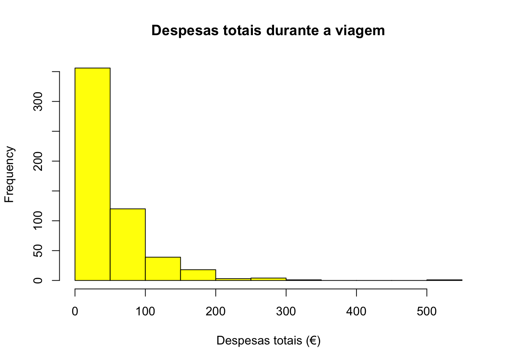

load("~/Dropbox/_R-SCool/_RSCool.B_Website/RSCool_a_web_24/web_RSCool _Aveiro_1/z_Averiro_bases/AnaCatarina.Rdata")
# Criar novo objeto "S" para trabalhar a base (cópia da BD original)
S = senior2024glglglggAnálise das despesas durante a viagem de seniores
Carregar a base
Saber quais as variáveis na base
names(S) [1] "ID" "ENT" "Q01" "Q011" "Q021"
[6] "Q022" "Q023" "Q024" "Q025" "Q03"
[11] "Q04" "Q041" "Q042" "Q043" "Q044"
[16] "Q045" "Q046" "Q047" "Q048" "Q049"
[21] "Q049D" "Q051" "Q052" "Q053" "Q054"
[26] "Q055" "Q056" "Q057" "Q058" "Q059"
[31] "Q0510" "Q0511" "Q0512" "Q0513" "Q0514"
[36] "Q0514D" "Q061" "Q062" "Q063" "Q064"
[41] "Q065" "Q066" "Q067" "Q068" "Q069"
[46] "Q0610" "Q0611" "Q0612" "Q0613" "Q0614"
[51] "Q0615" "Q0616" "Q0617" "Q0618" "Q0619"
[56] "Q0620" "Q0621" "Q0622" "Q0623" "Q0624"
[61] "Q0625" "Q0626" "Q0627" "Q0627D" "Q071"
[66] "Q072" "Q073" "Q074" "Q075" "Q076"
[71] "Q077" "Q078" "Q079" "Q0710" "Q0711"
[76] "Q0712" "Q0713" "Q0714" "Q0715" "Q0716"
[81] "Q0717" "Q0718" "Q0719" "Q0720" "Q0721"
[86] "Q0722" "Q0723" "Q08" "Q08D" "Q091"
[91] "Q092" "Q093" "Q094" "Q095" "Q096"
[96] "Q096D" "Q101" "Q102" "Q103" "Des_Tota"
[101] "Q1021" "Q1022" "Q1023" "Q111" "Q112"
[106] "Q113" "Q114" "Q115" "Q116" "Q117"
[111] "Q118" "Q119" "Q1110" "Q1111" "Q121"
[116] "Q122" "Q123" "Q124" "Q131" "Q132"
[121] "Q14" "Q15" "Q16" "Q161" "Q17"
[126] "Q171" "Q18" "Q18D" "Q191" "Q192"
[131] "Q193" "Q194" "Q195" "Q196" "Q196D"
[136] "Q20" "Q21" "Q215D" "Q22" "Idade_Categ"Fazer uma análise (histograma, mínimo, máximo, média) da variável Des_Tota, a amarelo, com título personalizado
min(S$Des_Tota,na.rm=TRUE)[1] 0max(S$Des_Tota,na.rm=TRUE)[1] 520mean(S$Des_Tota,na.rm=TRUE)[1] 56.22509hist(S$Des_Tota,col = "yellow", main = "Despesas totais durante a viagem", xlab = "Despesas totais (€)" )
Tabela frequências percentuais NUTS II
t1 =table (S$Q161)
t2per <- cbind(Freq=t1,
Cumul=cumsum(t1),
Relative=prop.table(t1)*100,
Cum.Rel.=cumsum(prop.table(t1)
*100)) ;
t2per Freq Cumul Relative Cum.Rel.
68 68 12.341198 12.34120
Alentejo 46 114 8.348457 20.68966
Algarve 19 133 3.448276 24.13793
Centro 192 325 34.845735 58.98367
Lisboa 52 377 9.437387 68.42105
Norte 174 551 31.578947 100.00000Teste de T entre Despesas antes e durante a viagem
t.test(S$Q101,S$Q102)
Welch Two Sample t-test
data: S$Q101 and S$Q102
t = -7.9545, df = 983.57, p-value = 4.921e-15
alternative hypothesis: true difference in means is not equal to 0
95 percent confidence interval:
-31.67097 -19.13675
sample estimates:
mean of x mean of y
31.40596 56.80982